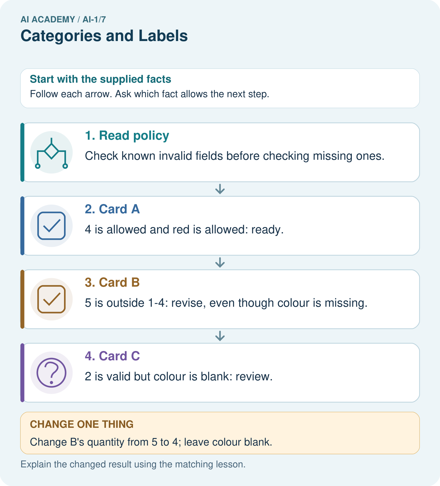

AI Academy · Level 1 · Grade 6 · Week 7 · Teacher guide
Categories and Labels
Learn to understand, design, build, test and explain AI systems responsibly.
Project: Helpful Classroom Sorter
Teacher guide · 1 of 8
Categories and Labels
Teach the learning cycle
Primary target: Apply a category definition using explicit evidence and boundary rules
| Session | Sequence and minutes | Resources |
|---|---|---|
| Session 1 · Understand · 45 min | 0–7: recall and prerequisite; 7–15: inspect the concrete case and predict; 15–30: teacher models the worked trace; 30–40: learners explain a step using the text and visual; 40–45: check the core idea. | Sections 1–6; record the brief recall in the workbook. |
| Session 2 · Practise · 45 min | 0–5: retrieve the procedure; 5–15: W2 completion practice; 15–23: explain and check with a partner; 23–30: each learner answers the misconception check; 30–40: targeted reteaching or a harder variation; 40–45: prepare the investigation. | Sections 7–10; use the matching workbook W2 and misconception check. |
| Session 3 · Investigate and transfer · 45 min | 0–5: retrieve the decision rule; 5–20: investigate or trace; 20–30: start the independent case; 30–38: connect the project; 38–43: act on feedback; 43–45: plan the return check. | Sections 9 and 11–14. Give extra time to finish the full task set; use Section 15 when the week includes a coding lab. |
This is a starting allocation of 135 minutes, not a validated duration. Preserve all named topics. Schedule extra time for connected examples, the full investigation, independent cases and project building. Repeated copies of a case share one recorded attempt; they are not new evidence.
Case exposure check: this source example appears in ai-1/7, ai-2/8. Reuse a familiar case for recall or modelling; verify that the case used to assess transfer has not already received feedback.
Retrieval answer guidance
Sound Becomes a Signal
Without opening the old lesson, explain one key idea from Sound Becomes a Signal. Give an example and a mistake that the idea helps you avoid.
Look for: Interpret an ordered sequence of sound-signal samples with a stated time interval
Reference example, not the only acceptable wording: Five samples, a 2 ms interval, and 8 ms from first to last. Consecutive pairs make gaps 0-2, 2-4, 4-6 and 6-8: four gaps between five samples.
Rules or Learned Patterns?
Without opening the old lesson, explain one key idea from Rules or Learned Patterns?. Give an example and a mistake that the idea helps you avoid.
Look for: Execute a stated rule including its boundary
Reference example, not the only acceptable wording: At least 5 gives narrow, wide, wide. Greater than 5 gives narrow, narrow, wide. Only the equality case changes among these inputs.
AI or Not?
Without opening the old lesson, explain one key idea from AI or Not?. Give an example and a mistake that the idea helps you avoid.
Look for: Distinguish an observed result from an explanation of how it was produced
Reference example, not the only acceptable wording: Observations include that the door opened when the visitor approached and that its label says intelligent entrance. A useful question asks whether a written sensor threshold, a model fitted on examples or a person controls opening. The label is an observed marketing claim, not mechanism evidence.
Use the student module and workbook section with this exact week title. The worked case, independent question and answers below form one aligned lesson sequence.
What the learner must demonstrate
Your dataset labels 'reusable containers'. One team includes a disposable bottle reused once; another excludes it. Give an operational label rule and classify this boundary case under that rule. Explain why a different rule could be defensible.
Concept to explain
Labels are human choices that may overlap or be unclear.
| Term | Meaning |
|---|---|
| category | group created for a purpose |
| label | name assigned to an example |
| overlap | when more than one label can fit |
| ambiguity | when evidence allows multiple reasonable meanings |
Prepare the class
Use the supplied scenario, student illustrations and blank paper. For numeric work, offer counters or a calculator after learners show the setup. Fictional records are supplied; personal data and paid accounts are unnecessary.
Allow 80 minutes: recall 8; explanation 12; worked demonstration 15; guided practice 20; independent assessment 15; project and reflection 10. Extend the lab into a second session when needed.
Preparation for the connected explanation
This lesson establishes labels as task-dependent records produced under a guide. Use fictional event and equipment forms rather than categories about classmates. The three categories deliberately separate known failures from unknown information, with known failure taking priority. A ready label checks a representation; it does not establish truth, quality, safety or permission. Agreement is useful evidence about consistency, but shared mistakes can produce high agreement.
Readiness answer
The missing word is information the representation does not establish. Filling it without evidence adds an assumption; a later stage should preserve the uncertainty or request a check.
Paper calendar cards with the four worked field combinations and the printed policy
A second set of cards labelled independently by partners before discussion
The equipment-request cases on a separate sheet for independent assessment; no accounts or personal data are required
End goal for the pictorial case
By the end, I can apply a shared labelling policy consistently, including missing information.
This added worked case illustrates the week’s main idea. Retain all original and connected topics; schedule its practice within the teaching cycle.
Teacher guide · 2 of 8
Explain the mechanism
Explain the mechanism
Follow the information instead of imagining magic inside the machine.
INPUT objects and a purpose for sorting
PROCESS people define labels and assign examples
OUTPUT category names attached to items
CORE IDEA Labels are human choices that may overlap or be unclear.
UNDER THE HOOD A label is an operational definition chosen for a task. Categories may be mutually exclusive, multi-label, hierarchical, subjective, or context-dependent. Ambiguity in labels becomes ambiguity in training and evaluation.
Draw a fresh example with all three stages:
Every step connects a claim to observable evidence.
CASE A playground object can be both red and round, a toy and sports equipment, or safe in one situation and unsafe in another.
STEP 1 — OBSERVE objects and a purpose for sorting
STEP 2 — TRACE people define labels and assign examples
STEP 3 — CONCLUDE category names attached to items
MODEL REASONING Strong labels include a purpose and a rule for membership. Overlapping objects may need multiple labels or a priority rule. A revised definition should reduce disagreement without pretending every case is simple.
DO NOT OVERCLAIM Labels do not exist naturally in the data; people define them for a purpose.
What new evidence could change this answer?
Concrete teaching case
Six cards show two circles, two triangles and two squares. Sort by shape.
Why can red and blue circles share a label?
Exact explanation to model
Both meet the circle definition. Colour does not change the agreed shape label. Apply one definition consistently.
Explain the added worked example
Two students are sorting fictional event cards for a classroom calendar. Their first instruction is Put the good cards together. Mina calls a colourful card good. Theo calls a plain card good because its room is easy to read. They disagree even though both followed a reasonable interpretation of the word good.
A category is useful for a task when people can tell what evidence makes an example belong to it. An operational definition states the observations or checks to perform. For this paper exercise, we will check two printed fields: an event day and a room code. The task is to check the record against a classroom policy, not to judge the quality of the event or the person who wrote it.
Labels depend on the definition in use. A model fitted to labels can learn the distinctions those labels encode, including mistakes and inconsistencies. Before asking a model to copy a label, ask whether people have a clear, useful guide for assigning it.
Our fictional calendar accepts a whole-number day from 1 through 30, including both endpoints, and exactly one room code, A or B. The month is already fixed for this exercise. A blank or unreadable field counts as unknown. The categories are revise, review and ready. Use the checks in the order shown.
Known failure and unknown are different. Day 31 is known and outside the accepted range, so the card needs revision. An unreadable day might be valid or invalid; without another known failure, it needs review. Never silently turn a blank into zero just to make a comparison possible.
Key terms
| Term | Meaning |
|---|---|
| Category | A group defined by stated membership criteria |
| Operational definition | A definition precise enough to tell someone what to observe or do when assigning a category |
| Label | The category recorded for an example under a particular guide |
| Annotator | A person who assigns labels to examples |
| Disagreement | A case where annotators assign different labels to the same example |
Model the reasoning aloud
Use the complete worked example below before asking learners to complete W2. Reveal a small part, invite a prediction, then explain the deciding step. These teacher notes contain solutions; do not reveal the independent case answer during modelling.
| Day 12 room A | Both values satisfy the criteria | Ready because both checks pass |
|---|---|---|
| Day 31 room A | 31 is outside 1 through 30 | Revise because a known value fails |
| Day 12 room unreadable | No known failure but the room is unknown | Review until the room is checked |
| Day 31 room unreadable | The day already fails although the room is unknown | Revise because the first check has priority |
For the last card, first read only what is known: day 31. Compare it with the allowed range and record a failure. The guide therefore selects revise before the missing-room check. Checking the room later could reveal another problem, but it cannot make day 31 satisfy this policy.
A clear explanation cites the particular criterion. Saying It looks wrong is not enough. Write Day 31 exceeds the accepted maximum of 30 instead. That explanation lets another person reproduce the check and challenge it if the recorded value or policy is different.
| Thinking move | Teacher prompt |
|---|---|
| Plan | What is given? What is the question? Which procedure fits these facts? |
| Do | Point to each input and intermediate step in the worked trace. Name the rule that allows the next step. |
| Check | Does the output answer the question? Which assumption or limitation prevents a larger claim? |
Use the diagram and verbal explanation together. Ask learners to match a sentence to a specific visual step; do not assign learners fixed visual or auditory learning styles.
A pictorial worked case: Categories and Labels
A fictional craft club labels cardboard-order cards ready, review or revise.
The facts we will use
Allowed quantity: whole number 1–4. Required colour: red or blue.
If any known field fails, revise; otherwise if a required field is blank, review; otherwise ready. Cards A=(4,red), B=(5,blank), C=(2,blank).

Read the picture one step at a time
Why this result follows
Operational labels specify what a word means for this task. Two labellers using the same priority should agree on these cards. Review describes missing evidence, not a hidden assumption that the card is wrong. Revise is supported by a known failure.
What this example does not establish
Agreement between labellers does not prove this policy is suitable for every school or that labels are objective truths.
Change one thing in the pictured case
Change: Change B’s quantity from 5 to 4; leave colour blank.
Prediction: B becomes review.
Reason: The known failure is removed, but a required field is still missing.
Ask while showing the picture
Cover the result. Ask learners to name the inputs and predict the next step. Uncover one step, connect the icon to the actual procedure, and explain its evidence. Then change the supplied condition and compare. The picture is a representation; it does not document execution of a real AI model.
Teacher guide · 3 of 8
Demonstrate and guide practice
Demonstrate and guide practice
Board sequence
Write the given facts: Six cards show two circles, two triangles and two squares. Sort by shape.
Write the question to explain: Why can red and blue circles share a label?
Reveal after predictions: Both meet the circle definition. Colour does not change the agreed shape label. Apply one definition consistently.
Keep for an independent attempt: The rule is: fruit has seeds; other objects go in other. Sort an apple, a pencil and a sealed mystery box. Which item needs more evidence, and why?
Classroom dialogue
Ask: Which facts are given, and which would we have to assume? Learners mark relevant details before discussing answers.
Say: Predict first. Show the rule, information path or calculation that would produce the result. A correct guess is not yet an explanation.
Reveal reasoning one step at a time. Explain why a tempting alternative fails. Write units and denominators for arithmetic, trace conditions for decisions, and identify supporting sources for claims.
In pairs, one learner solves while the other checks evidence; exchange roles. Remove the worked answer before independent assessment.
Model these guided questions
Day 0 room A is revise because 0 falls below the accepted minimum of 1; the known day needs correction. Day 18 with a blank room is review because the known day passes and the room is unknown; the missing evidence must be checked. Two people labelling everything ready establishes agreement only. They may share a mistake, ignore the criteria or work from inaccurate records. Correct field checks also do not confirm the event or its permission.
Case-specific teaching sequence
| Stage | Teacher action |
|---|---|
| Session 1 start 0 to 7 minutes | Retrieve the missing-word example from Week 6. Ask what evidence a blank supplies and what it does not. |
| 7 to 20 minutes | Give the vague good-card instruction and collect two different interpretations. Replace it with observable field criteria. Read the ordered checks aloud. |
| 20 to 33 minutes | Trace all four worked cards. Emphasise the inclusive boundary and the priority of a known failure over an unknown field. |
| 33 to 45 minutes | Pairs complete W1 and W2. Ask each learner to cite a criterion rather than a personal impression. |
| Session 2 start 0 to 8 minutes | Label two fresh calendar cards independently before comparing. Keep original labels visible during discussion. |
| 8 to 23 minutes | Complete W3. Distinguish counting agreement from checking correctness against source fields and policy. |
| 23 to 38 minutes | Collect W4 independently. Require four labels with reasons and a statement about the limit of ready. |
| 38 to 45 minutes | Use W5 to demonstrate a policy-version conflict. Discuss the exit question and preview choosing useful input features. |
Reduce help deliberately
Completion task: A helper says Label a card ready if it looks nice. Explain why this can lead to inconsistent labels. Replace it with an instruction that another person can apply using the calendar policy, including what to do about a blank field.
Teacher check: Looks nice has no agreed observable criterion and can invite different preferences. A usable replacement checks for a known day outside whole numbers 1 to 30 or a known room other than A/B and labels revise; otherwise any blank or unreadable required field gives review; otherwise label ready. Accept equivalent wording that preserves all criteria and priority.
Start by identifying the given inputs together. Leave the intermediate steps blank. If needed, model one step, then withdraw that help on the next step. Move to a full trace only when the partial trace is understood. For partners, alternate explainer and checker; collect a response from every learner before discussion.
Individual reasoning check
Use the worked case for Categories and operational labels. Proposed explanation: “A blank is the same as a failing value”. Decide whether this explanation is supported. Point to the step or supplied fact that decides; explain your repair if needed.
Expected correction: Contrast unreadable day with day 0. One is unknown; the other is known to violate the stated range.
Collect explanations, not only yes/no votes. If a misunderstanding is common, re-model the relevant step for the class. If it affects a few learners, give a short targeted group explanation while others solve a more demanding variation.
Pictorial practice question
Explain why B originally was revise rather than review, then label its changed version.
Reasoned teacher answer
Quantity 5 violates the allowed range and failure has priority. With quantity 4 and missing colour, B is review.
Changed-case reasoning: B becomes review. The known failure is removed, but a required field is still missing.
Collect each learner’s explanation before discussion. Use the first missing connection between input, deciding step and result to choose support. This question is worked-case practice, not fresh mastery evidence.
Teacher guide · 4 of 8
Run the weekly evidence lab
Run the weekly evidence lab
Predict first, test honestly, and explain what the evidence means.
State your prediction before the result is known.
Complete the task: Design labels for playground objects; challenge ambiguous cards.
Keep a normal case and an edge case clearly separated.
Record what happened—even when it does not match your prediction.
Explain the result, one limitation, and the next useful test.
INDEPENDENCE After support is removed, repeat the proof with a fresh case.
Make the lab runnable
Use the concrete case as the shared normal case and the independent question as a second case. Each pair creates a boundary or missing-information case and predicts its result before testing. Keep the expected result separate from an observed mistake.
| Record | What to capture |
|---|---|
| Input or evidence | Exact data, instruction or claim |
| Expected result | Answer or safe fallback declared before the run |
| Observed result | Actual result, including errors |
| Explanation | Rule, calculation or evidence explaining the outcome |
| Next test | One justified change and a new prediction |
Diagnose and reteach
CLAIM TO REPAIR Every object must receive a confident label.
For guessing, return to given facts and request a trace. For vocabulary without application, use one example and one non-example. For arithmetic errors, check the setup before the calculation. Finish with a different uncoached case before recording mastery.
Address these additional misconceptions
A blank is the same as a failing value: Contrast unreadable day with day 0. One is unknown; the other is known to violate the stated range.
Review must win whenever any field is missing: Trace the guide in order for day 31 with a blank room. The known failure already selects revise under this policy.
Agreement proves the labels are true: Give two annotators the same mistaken exclusive-boundary interpretation. Their agreement can coexist with incorrect labels.
A category describes the whole person or event: Return to the task scope. Ready checks two printed fields under one policy, not the worth of a person or the reality of an event.
Match the support to the first error
| What the response shows | Next teaching action |
|---|---|
| Missing or misread facts | Read the case aloud, mark supplied versus unknown facts, and let the learner restate it. |
| Wrong procedure | Return to the deciding step in the worked case. Contrast it with the proposed incorrect explanation. |
| Arithmetic or implementation error | Trace intermediate values or lines; preserve the first mismatch and retry that step. |
| Correct result without a reason | Ask for a trace and a changed case before marking independent understanding. |
| An unsupported wider claim | Ask which supplied evidence supports the claim and which further observation would be needed. |
Offer an oral explanation, drawing, enlarged visual or fewer examples when that removes a reading/writing barrier. Keep the same reasoning goal. Stretch secure learners by changing a boundary or assumption and asking them to defend the effect, not simply by assigning more of the same questions.
Teacher guide · 5 of 8
Assess and explain the answers
Assess and explain the answers
Worked case answer
Both meet the circle definition. Colour does not change the agreed shape label. Apply one definition consistently.
Independent question
The rule is: fruit has seeds; other objects go in other. Sort an apple, a pencil and a sealed mystery box. Which item needs more evidence, and why?
Expected independent answer
Apple is fruit and pencil is other under the supplied rule. The sealed box needs more information about its contents; the label cannot be justified from the box alone.
What counts as evidence
| Criterion | 0 points | 1 point | 2 points |
|---|---|---|---|
| Result | Incorrect or absent | Partly correct | Correct with necessary conditions |
| Reasoning | No supporting trace | Some steps | Clear mechanism, calculation or source support |
| Limit | Overclaims certainty | Vague limitation | Relevant uncertainty or missing fact |
| Transfer | Copies without adapting | Adapts with prompts | Solves a changed case independently |
Use 6/8 as a classroom checkpoint, with 2 required for both Result and Reasoning. This is a proposed teaching rule, not a validated certification threshold. Do not count a coached answer as independent mastery; correct unsafe or unsupported claims regardless of total.
Feedback
Ask the learner to find the evidence that challenges this claim: “Every object must receive a confident label.” Keep the first attempt and an uncoached retry separate.
Original transfer answer
One defensible rule is 'designed by its maker for repeated use', which excludes the disposable bottle. Another is 'used more than once', which includes it. State which task the labels serve, use one rule consistently and record unresolved cases; neither team should silently change definitions.
Explanations for the additional workbook examples
W1 Apply the calendar guide
The calendar policy accepts whole-number days 1 through 30 inclusive and a room code A or B. Check known failures first, then unknown fields, then readiness. Label these cards and give evidence: day 30 room B; day 31 room A; day 14 room unreadable; day 31 room unreadable.
In order: ready because both known fields pass; revise because 31 exceeds 30; review because the known day passes but the room is unknown; revise because the known day failure has priority over the unknown room. Equality at 30 is accepted.
W2 Replace a vague instruction
A helper says Label a card ready if it looks nice. Explain why this can lead to inconsistent labels. Replace it with an instruction that another person can apply using the calendar policy, including what to do about a blank field.
Looks nice has no agreed observable criterion and can invite different preferences. A usable replacement checks for a known day outside whole numbers 1 to 30 or a known room other than A/B and labels revise; otherwise any blank or unreadable required field gives review; otherwise label ready. Accept equivalent wording that preserves all criteria and priority.
W3 Count and investigate disagreement
For the same four cards, Mina records ready, revise, review, ready. Theo records ready, review, review, revise. How many positions agree? Identify the disagreements. Can you decide which annotator is correct from these label lists alone? Explain what else you need.
Positions 1 and 3 agree, so there are two agreements out of four. Positions 2 and 4 disagree. The lists alone do not show which labels are correct; inspect the corresponding card fields and the guide version, then compare each explanation with the criteria. Agreement at positions 1 and 3 does not itself prove correctness.
W4 Transfer the method to a new record
A fictional equipment-request form accepts a whole-number borrowing duration of 1 through 7 days inclusive and one item code X or Y. Label revise if any known field fails; otherwise label review if a field is blank or unreadable; otherwise label ready. Classify these forms and justify each: 7 days X; 8 days Y; unreadable duration X; 8 days blank code. Explain whether ready alone grants permission to borrow.
7 days X is ready: both pass, including the endpoint. 8 days Y is revise: duration exceeds 7. Unreadable duration X is review: no known failure but duration is unknown. 8 days blank code is revise: the known duration failure has priority. Ready only means the printed fields satisfy this policy; borrowing still requires the actual availability and authorisation process.
W5 Keep a policy change visible
Version 1 accepts calendar days 1 through 30. Version 2 accepts days 1 through 31. A card says day 31 room A. State its label under each version. Explain why mixing the two labels without recording the version could create a misleading training dataset.
Under Version 1 the card is revise; under Version 2 it is ready. Both can be correct relative to their different policies. If the version is omitted, identical printed fields appear to have conflicting targets without explanation. Record which policy produced each label and review or relabel consistently for the intended task; do not erase the history.
Assess independent transfer
Selected case: A fictional equipment-request form accepts a whole-number borrowing duration of 1 through 7 days inclusive and one item code X or Y. Label revise if any known field fails; otherwise label review if a field is blank or unreadable; otherwise label ready. Classify these forms and justify each: 7 days X; 8 days Y; unreadable duration X; 8 days blank code. Explain whether ready alone grants permission to borrow.
Selected case answer
7 days X is ready: both pass, including the endpoint. 8 days Y is revise: duration exceeds 7. Unreadable duration X is review: no known failure but duration is unknown. 8 days blank code is revise: the known duration failure has priority. Ready only means the printed fields satisfy this policy; borrowing still requires the actual availability and authorisation process.
| Dimension | Evidence required |
|---|---|
| Explanation | Names the applicable idea or procedure and ties it to the supplied facts. |
| Trace and result | Preserves the given inputs and shows the relevant intermediate steps; distinguishes a prediction from an observed execution. |
| Limits | States the assumptions, missing evidence or conditions under which the result would change. |
Record each dimension as not yet, with support, or independent. Accept a valid alternative procedure with a defensible trace. Do not penalise an honestly recorded model failure if the learner correctly explains its evidence and limits.
Feedback that the learner uses
Name the earliest unsupported step and give one action to repair it. Have the learner make that repair now and explain why. Then assess the relevant skill on a fresh, fully specified case. Confirm it was not previously practised with feedback; solve and check the new case before assigning it. A follow-up design prompt is a starting brief, not automatically an equivalent test.
Teacher guide · 6 of 8
Connect and extend learning
Connect and extend learning
Helpful Classroom Sorter
Define the Classroom Sorter's bin labels and write how to handle objects that reasonably fit more than one bin.
Keep the decision, input, result, explanation and remaining limitation in the project evidence record. Retrieve this record next week rather than restarting the project.
Support and stretch
Use physical cards, spoken explanations and a three-stage drawing. Read aloud without giving the answer. Stretch: compare two mechanisms with the same visible output and explain what evidence distinguishes them.
Exit reflection
Ask for one decision the learner can now justify and one situation requiring more evidence or human review. Confidence ratings are separate from correct independent performance.
Bridge to the next week
Next: Week 8: Features: Useful Clues. Retrieve today’s evidence and identify what carries forward and what is new.
Support and fresh reassessment
Provide a three-step checklist and highlight known versus unreadable fields using words as well as colour. Let learners explain orally while pointing to the criterion. Extension: ask how a different priority policy would label mixed cases, and why that change must be documented rather than silently merged into the old labels.
W4 is secure when all four labels follow the new range and codes, the reasons cite the relevant evidence, the mixed failure/unknown case respects priority, and ready is not treated as authorisation. If only the labels are correct, ask for the reasoning before recording mastery. After support, use new forms with a different maximum and codes for an uncoached retry.
Week 8 examines features: which recorded properties retain the distinctions a task needs, and which attractive-looking inputs add little useful information.
Plan the delayed return
Suggested return points in this level: ai-1/8, ai-1/10, ai-1/13. Use actual classroom dates, adjusting for holidays and gaps. One, three and six teaching weeks are scheduling choices, not a claimed optimal spacing.
At a delayed check, ask for the idea from memory and a changed application. Compare with the earlier independent response and record support used. For a new level, revisit the previous capstone before checking the new prerequisites.
| Record | Teacher evidence |
|---|---|
| Learner code and date | |
| Concept and case used; prior exposure | |
| Explanation / trace / limits | |
| Support and first repair | |
| Changed case and delayed outcome | |
| Next teaching action |
Use the evidence to choose reteaching or the next step. A completed page, confidence rating or attractive project does not by itself demonstrate understanding.
Project evidence from this case
Write a sorter label guide with examples of complete, invalid and unresolved inputs before comparing labels.
Teacher guide · 7 of 8
Prepare, teach and assess
Teaching target: Apply a category definition using explicit evidence and boundary rules
Prepare the labelled worked-case picture, the matching workbook, fictional input cards and a place for individual responses. No paid AI account is required for the paper reasoning activities.
| Session | Plan | Resources |
|---|---|---|
| Session 1 · Understand · 45 min | 0–7: recall and prerequisite; 7–15: inspect the concrete case and predict; 15–30: teacher models the worked trace; 30–40: learners explain a step using the text and visual; 40–45: check the core idea. | Sections 1–6; record the brief recall in the workbook. |
| Session 2 · Practise · 45 min | 0–5: retrieve the procedure; 5–15: W2 completion practice; 15–23: explain and check with a partner; 23–30: each learner answers the misconception check; 30–40: targeted reteaching or a harder variation; 40–45: prepare the investigation. | Sections 7–10; use the matching workbook W2 and misconception check. |
| Session 3 · Investigate and transfer · 45 min | 0–5: retrieve the decision rule; 5–20: investigate or trace; 20–30: start the independent case; 30–38: connect the project; 38–43: act on feedback; 43–45: plan the return check. | Sections 9 and 11–14. Give extra time to finish the full task set; use Section 15 when the week includes a coding lab. |
Before class, solve the supported practice: A helper says Label a card ready if it looks nice. Explain why this can lead to inconsistent labels. Replace it with an instruction that another person can apply using the calendar policy, including what to do about a blank field.
Reasoned practice answer: Looks nice has no agreed observable criterion and can invite different preferences. A usable replacement checks for a known day outside whole numbers 1 to 30 or a known room other than A/B and labels revise; otherwise any blank or unreadable required field gives review; otherwise label ready. Accept equivalent wording that preserves all criteria and priority.
Check every learner before discussion: Use the worked case for Categories and operational labels. Proposed explanation: “A blank is the same as a failing value”. Decide whether this explanation is supported. Point to the step or supplied fact that decides; explain your repair if needed.
Misconception repair: Contrast unreadable day with day 0. One is unknown; the other is known to violate the stated range.
Support: read the exact case aloud, enlarge the labelled picture, supply input cards and model only the first deciding step. Accept a spoken explanation or drawing; retain the reasoning goal.
Extension: Change B’s quantity from 5 to 4; leave colour blank. Require a prediction and a reason before comparing. Expected result: B becomes review. Reason: The known failure is removed, but a required field is still missing.
Independent assessment: withhold the reserved answer until the learner has attempted the new case. Record support separately from correctness.
| Criterion | Not yet | With support | Independent |
|---|---|---|---|
| Explanation | Names an answer without a deciding fact | Uses a hint to link fact and decision | Explains the deciding fact in own words |
| Trace or test | Cannot connect input and result | Completes steps with prompts | Traces or tests a changed case accurately |
| Limits and revision | Claims more than evidence supports | Names a limit after a prompt | States a defensible limit and useful next test |
Project checkpoint: Make a transparent first version. Keep a trace of how one input becomes an output; explain the rule or learned component.
Use the weekly teacher answer for topic-specific reasoning. A saved progress tick is an activity record; judge mastery from the learner’s explanation and evidence.
Teacher guide · 8 of 8
Use feedback, labs and repair paths
Use the two formative questions as supported practice, not as independent mastery scores. Discuss the deciding evidence rather than accepting a guessed selection.
The feedback comes from the reviewed public worked case. Do not reveal the separately reserved independent teacher answer until the learner has attempted that case.
Ask students to predict before running code. Preserve errors and actual outputs; collect a changed test and an explanation. The branch-boundary and indexing lessons deliberately include failure cases.
Use the earlier worked-explanation links to address a specific missing building block, then return to the current question. Adapt this suggestion after observing the learner; it is not an automatic diagnosis.
Collect the completed-work portfolio as evidence. Record support separately from correctness, and assess explanation, trace/test and limitations. Progress ticks and quiz selections alone do not establish mastery.